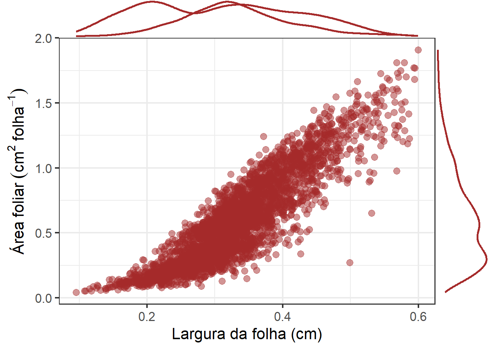
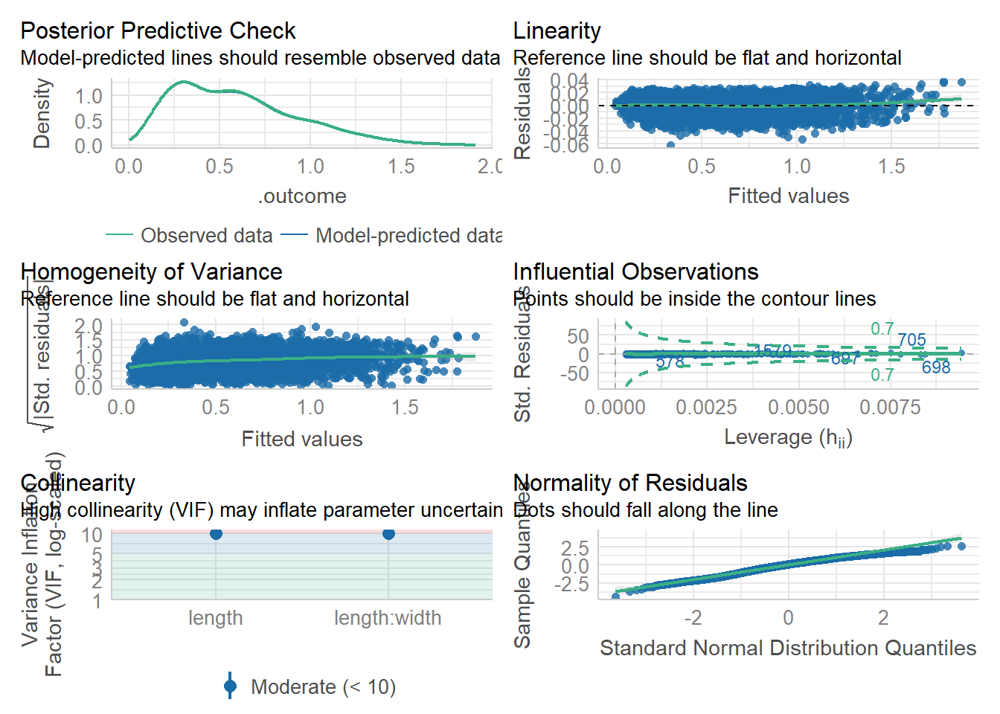
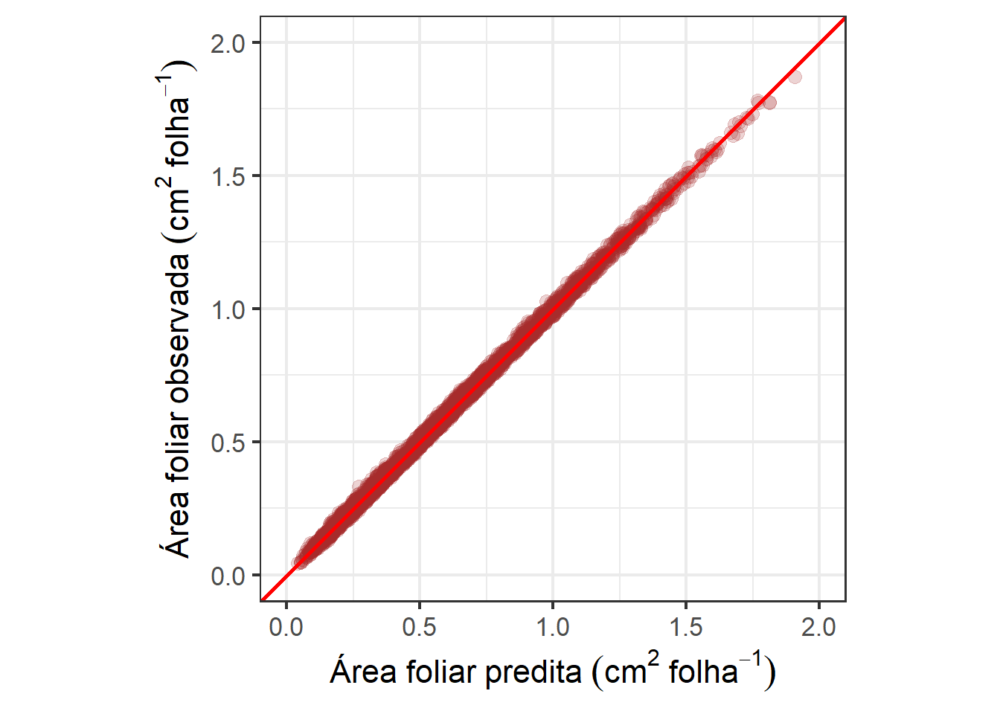

10. Um método simples e indireto para estimação da área de folha de linho
% Analysis
1 Libraries
To reproduce the examples of this material, the R packages the following packages are needed.
2 Data
df_af <- rio::import("data/leaf_flax_pred.xlsx")
descritiva <-
df_af |>
summarise(across(area:width, .fns = list(media = mean, min = min, max = max)))
descritiva
## area_media area_min area_max length_media length_min length_max width_media
## 1 0.5909433 0.04281334 1.907076 2.142723 0.511989 4.37025 0.3322159
## width_min width_max
## 1 0.09535828 0.5995659
p1 <-
ggplot(df_af, aes(length, area)) +
geom_point( size = 3, alpha = 0.5, color = "brown") +
labs(x = "Comprimento da folha (cm)",
y = expression(Área~foliar~(cm^2~folha^{-1}))) +
theme_bw(base_size = 16)
ggMarginal(p1, color = "brown", size = 7, linewidth = 1)
p2 <-
ggplot(df_af, aes(width, area)) +
geom_point( size = 3, alpha = 0.5, color = "brown") +
labs(x = "Largura da folha (cm)",
y = expression(Área~foliar~(cm^2~folha^{-1}))) +
theme_bw(base_size = 16)
ggMarginal(p2, color = "brown", size = 7, linewidth = 1)
# functions
# concordance correlation coefficient
get_ccc <- function(df, predicted, real){
if(is.grouped_df(df)){
df %>%
group_modify(~get_ccc(.x, {{predicted}}, {{real}})) %>%
ungroup()
} else{
predicted <- pull(df, {{predicted}})
real <- pull(df, {{real}})
cor <- CCC(real, predicted, na.rm = TRUE)
data.frame(r = cor(real, predicted),
pc = cor$rho.c[[1]],
lwr_ci = cor$rho.c[[2]],
upr_ci = cor$rho.c[[3]],
bc = cor$C.b)
}
}3 Model
control <-
trainControl(method = 'cv',
p = 0.7,
number = 10,
verboseIter = TRUE,
savePredictions = "all")
fit <- train(area ~ length + length:width ,
method = "lm",
data = df_af,
trControl = control)
## + Fold01: intercept=TRUE
## - Fold01: intercept=TRUE
## + Fold02: intercept=TRUE
## - Fold02: intercept=TRUE
## + Fold03: intercept=TRUE
## - Fold03: intercept=TRUE
## + Fold04: intercept=TRUE
## - Fold04: intercept=TRUE
## + Fold05: intercept=TRUE
## - Fold05: intercept=TRUE
## + Fold06: intercept=TRUE
## - Fold06: intercept=TRUE
## + Fold07: intercept=TRUE
## - Fold07: intercept=TRUE
## + Fold08: intercept=TRUE
## - Fold08: intercept=TRUE
## + Fold09: intercept=TRUE
## - Fold09: intercept=TRUE
## + Fold10: intercept=TRUE
## - Fold10: intercept=TRUE
## Aggregating results
## Fitting final model on full training set
print(fit)
## Linear Regression
##
## 3522 samples
## 2 predictor
##
## No pre-processing
## Resampling: Cross-Validated (10 fold)
## Summary of sample sizes: 3170, 3169, 3170, 3170, 3170, 3170, ...
## Resampling results:
##
## RMSE Rsquared MAE
## 0.01418923 0.9982461 0.01148978
##
## Tuning parameter 'intercept' was held constant at a value of TRUE
mod <- fit$finalModel
check_model(mod)
4 Predictions
library(ggpubr)
df_af <-
df_af |>
mutate(pred = predict(fit$finalModel))
get_ccc(df_af, area, pred)
## r pc lwr_ci upr_ci bc
## 1 0.9991208 0.9991204 0.9990604 0.9991766 0.9999996
# 1:1 concordance plot
ggplot(df_af, aes(area, pred)) +
geom_point(alpha = 0.2, color = "brown", size = 3) +
geom_abline(intercept = 0, slope = 1, color = "red", linewidth = 1) +
coord_equal() +
xlim(c(0, 2)) +
ylim(c(0, 2)) +
labs(y = expression(Área~foliar~observada~(cm^2~folha^{-1})),
x = expression(Área~foliar~predita~(cm^2~folha^{-1}))) +
theme_bw(base_size = 16)
ggsave("figs/pred_af.jpg", dpi = 600)